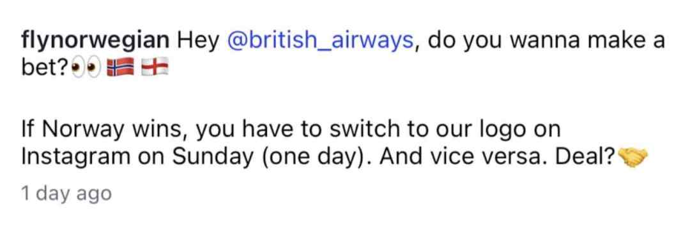

案例发生了什么

挪威航空与英航通过换头像赌约把比赛结果变成可围观、可监督、可兑现的品牌社交剧情。
现有资料可确认，这项动作由挪威航空 × 英航发起，发生在全球创意与非官方突围；品牌互玩 / 社媒，主要通过社交互动与平台内容抵达受众。执行过程可以连成一条完整路径：先低门槛、强反差的公开承诺制造悬念；随后允许对手品牌共同成为故事角色；最后快速兑现比赌得多大更重要。这些动作共同服务于“轻赌注、快兑现和围观式传播”，让页面能够区分参与主体、传播载体、用户接触点和品牌最终想留下的认知。
动作顺序：用低门槛、强反差的公开承诺制造悬念；允许对手品牌共同成为故事角色；快速兑现比赌得多大更重要。
当前资料边界：已核（Norwegian 官方 Instagram 留存 + AP / Omni 履约报道）；已归档 2 张赛前赌约与赛后换头像真实素材。页面只把已经记录的参与路径和动作写成事实，未取得一手材料的执行细节、投放规模与效果不作推定。
营销启发卡
用三张卡片保留最值得记住、讨论和迁移的部分。 卡片底部按主题连接全站相关案例、经典方法与深度文章。
用低门槛、强反差的公开承诺制造悬念
用低门槛、强反差的公开承诺制造悬念；允许对手品牌共同成为故事角色。
轻赌注、快兑现和围观式传播
以“品牌互玩 / 社媒”为资源起点，进入创意内容、社交讨论、门店/商品与可即时参与的生活场景；结果优先观察创意记忆、品牌自然提及、参与行为与商品/服务转化，不把曝光直接等同于销售。
赌约营销的核心不是高额赔付
赌约营销的核心不是高额赔付，而是清晰规则、共同围观与可信履约。
适用条件、风险与证据
- 切口必须与产品真实使用场景有关，否则容易变成蹭热度。
- 节奏上要靠近球迷讨论时刻，但不需要强行追每一场赛果。
- 对文化、肖像和赛事知识产权做独立审核。
资料状态与补证方向
不依赖最高级别赛事标识，争夺足球文化和生活场景。 页面已记录参与路径、动作机制、证据状态与素材状态。
已归档素材状态为“已归档 2 张赛前赌约与赛后换头像真实素材”，下一步应继续补发布日期、投放场景和可归因效果。
尚未归档可独立验证的效果数据时，不以曝光推断销售，也不把平台整体数据归因到单一品牌。